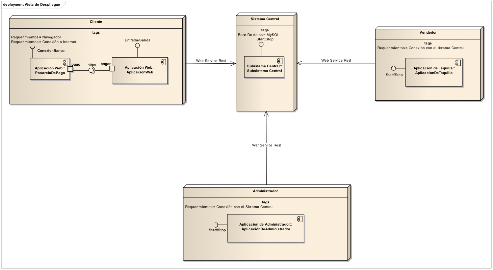
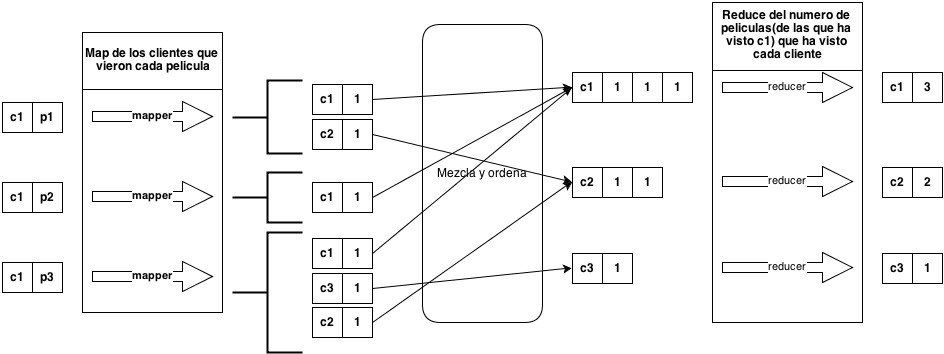

Entrecine
Sistema de gestión de entradas de cine
Creado por Daniel Meana Llorián, Eduardo Parrado Puente, Bruno López García, Marcos Rodríguez Martínez y Cristian Álvarez Belaustegui
Problema
- Necesitamos implementar la arquitectura de un sistema de gestión de entradas de cine.
- Debe ser facil de utilizar.
- El sistema debe gestionar la venta de entradas:
- A través de una página web de Internet
- Directamente en la taquilla del cine
Primera solución
Consistía en...
Una base de datos central conectada a:
- Un servidor web que permita la compra por Internet
- Una aplicación especial para los TPV de taquilla
- Una aplicación especial para el administrador
Vista de despliegue
Se ha desechado por...
- No satisface los requisitos:
- Alto coste de desarrollo y mantenimiento
- Proceso de desarrollo largo
- Demasiado compleja para este problema.
Solución definitiva
Se ha cambiado...
- Tomamos una aproximación más sencilla:
- Un servidor web en el que conviven todas las aplicaciones
- Aplicaciones accesibles desde cualquier navegador WEB
¿Qué hemos utilizado?
- Hacemos uso de varios patrones...
- MVC + N-capas
- Fachadas
- ... y varias tecnologías que nos ayudan en el desarrollo:
¿Por qué?
Obtenemos varios beneficios:
- Mantenemos la modularidad
- Se acorta el proceso de desarrollo
- Disminuye el coste de desarrollo y mantenimiento
Sistema de sugerencia de películas
¿Qué debemos hacer?
Debemos generar propuestas acordes con los intereses del espectador.
¿Disponemos de información adicional?
Algoritmo Map-Reduce
Utilizado por google para encontrar gran cantidad de resultados en fracciones de segundos
¿Qué nos aporta?
Múltiples ventajas:
- Gran velocidad
- Escalable
- Preciso